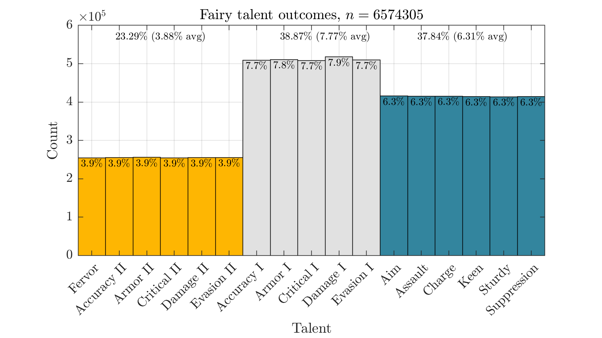
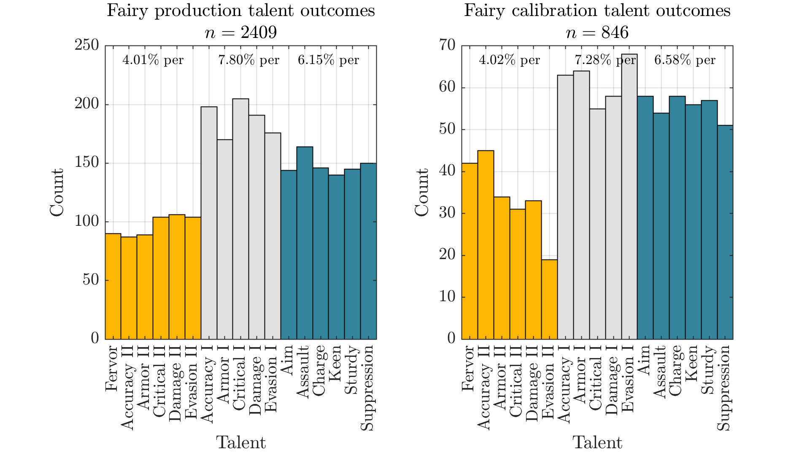

The Situation#
If you have some random game system and little information, it's reasonable to start out by assuming it is uniformly distributed. However, we have sufficient evidence to reject this null hypothesis in a number of systems within Girls' Frontline: T-Doll production (e.g., not all 5-star ARs are equally likely), SF unit size, coalition drill outcomes, and bingo come to mind.
Now, let's look at fairy talents. Setting aside flex talents only available from ranking events, we have:
"Stat I" talents (5):
- Damage I
- Accuracy I
- Evasion I
- Armor I
- Critical I
"Stat II" talents (5):
- Damage II
- Accuracy II
- Evasion II
- Armor II
- Critical II
Class-specific talents (6):
- Charge
- Assault
- Aim
- Sturdy
- Suppression
- Keen
Fervor (1):
- Fervor
It is left as an exercise for the reader to verify this sums to 17.
If you've been crafting your fairies properly, you'll have seen at least some of all of these. But "feeling" like it's been a while since you rolled a good talent is a far cry from having strong evidence against a uniform talent distribution.
To save you the effort and time it takes to collect large amounts of data, I've been noting all fairy craft data/talent calibrations for a while (and gotten some more from others doing the same). Perhaps more importantly, gf-db has tracked 6574305 talents from crafting. Slightly more than what I can manage on my own. Let's see what it looks like.
The Data#
Graphically,

We see quite a lot of Stat I talents, and not too many Stat II/Fervor talents. From user-recorded submissions, we can also check calibration data and see a similar distribution:

Note that the calibration side is particularly rough due to a limited sample size. But we can still see the same trend and ballpark numbers on each side. There isn't sufficient evidence to suggest they work differently.
Conclusion#
Talents are clearly not uniformly distributed. Gold talents appear at a notably lower rate than white talents. Class-specific talents show up a little less than "Stat I" talents. Rates do not vary per talent within each group.
The true rates appear to be:
| Category | Estimated rate | Plausible range |
|---|---|---|
| Stat II/Fervor | 3.88% per, 23.3% total | 3.876-3.883% per |
| Stat I | 7.77% per, 38.9% total | 7.767-7.782% per |
| Class-specific | 6.31% per, 37.8% total | 6.300-6.313% per |
It seems likely that fairy talents assigned from production and fairy calibration use the same underlying system (and have the same rates) for talents. Interestingly, the true rates do not appear to land on any particularly nice numbers - for example, a "25% gold talent rate" or an "8.0% individual Stat I talent rate" are completely implausible. The plausible ranges above are listed with 95% confidence.
See also: para raising strategies, optimized HEC logistics. Many thanks to all those who contributed their own talent data.
Minor notes#
- It is occasionally claimed that you should space out your calibrations in time to "get a better RNG seed." There is no reason to believe this unless provided a repeatable demonstration showing significantly better outcomes than what you would otherwise expect - which hasn't been done yet. Similar deal with the vodoo bingo strategies you'll hear.
- It's generally not worth raising a fairy with a more common/white talent, if you also have a copy with a good (Damage II/Fervor) talent. Fairies are easy to craft post-3.0, so one or two extra fodder needed due to fewer matching talents isn't a big deal, while calibration tickets are difficult to acquire in large quantities. Now that all talents have 100% proc rates, white talents don't even have a consistency edge.
- Ultimately, the main takeaway: expect calibration feeding to be a bit more painful than you previously thought, and I wish your resources the best of luck if you decide you need exactly one specific gold talent.